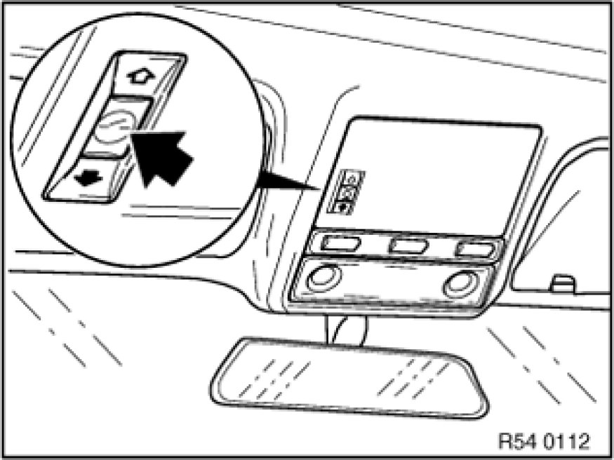
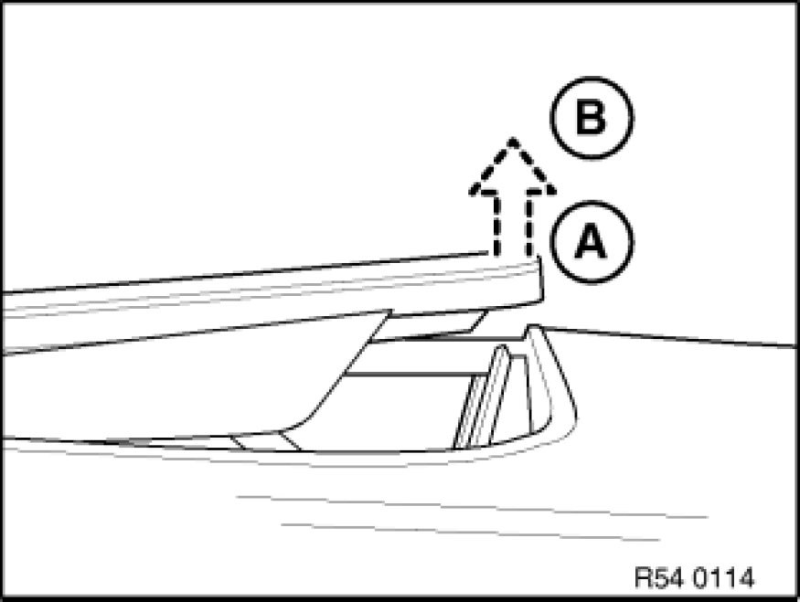

Sunroof / Moonroof: Testing and Inspection
54 0 ... - Notes on panorama glass roof (initialization/normalization/learning of characteristic curve)

Note:
Initialization comprises:
- Normalization
- Learning characteristic curve
The mechanical end positions are recorded and stored during normalization.
The characteristic curve is learned immediately after normalization.
When the characteristic curve is learned, the mechanical closing forces of the panorama glass roof are recorded and stored for correct operation of the anti-trapping mechanism.
Note:
Then carry out an initialization:
- if the panorama glass roof has been mechanically moved by means of the emergency actuator
- in the event of malfunctions, e.g. no one-touch function, no opening or no comfort function possible
- after disengagement of the drive unit
- after work is carried out on the mechanism of the panorama glass roof
- after the control unit has been replaced

Warning!
There is no anti-trapping protection during initialization.

Note:
Starting situation in accordance with following description:
- Panorama glass sunroof closed
- Floating roofliner completely open
Normalization:
- Press and hold the switch in the "Lift" direction
- In the event of delayed starting or sudden stopping of the panorama glass roof, continue pressing the switch in the "Lift" direction

- After reaching the lift end position (A), keep the switch pressed for approx. 15 seconds further
- Normalization is completed when the panorama glass roof in lift end position (A) presses again briefly in the direction of position (B).
Learning characteristic curve:
E53/E61/E83 only:
The curve is learned manually in the following steps:
- After normalization, keep switch pressed in "Lift" direction.
- The panorama glass roof stops for 5 seconds in the final raise position after normalization.
- Floating roofliner closes completely.
- Floating roofliner opens completely.
- The panorama glass roof then moves into the "Closed" position (learning of the "Closing from raising" curve)
- The panorama glass roof then moves into the "Open" end position and immediately back into the "Closed" position (learning of the "Closing" curve).
- Floating roofliner closes completely.
- Release switch.
E63 only:
The curve is learned manually in the following steps:
- After normalization, keep switch pressed in "Lift" direction.
- The panorama glass roof stops for 5 seconds in the final raise position after normalization.
- Floating roofliner closes completely.
- Floating roofliner opens completely.
- The panorama glass roof then moves into the "Closed" position (learning of the "Closing from raising" curve)
- Floating roofliner closes completely.
- Release switch.
Note:
- The entire operation lasts approx. 75 seconds
- Learning of the curve is terminated when the switch is released
- If the switch is released in the meantime, the entire procedure must be repeated
- On completion of successful initialization, the corresponding messages in the check control and the control display go out
- Carry out function check (tip function, anti-trapping protection and, if necessary, comfort function)